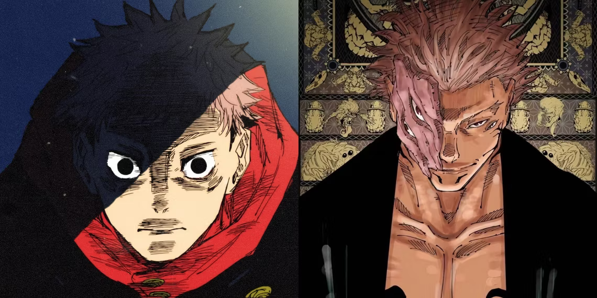
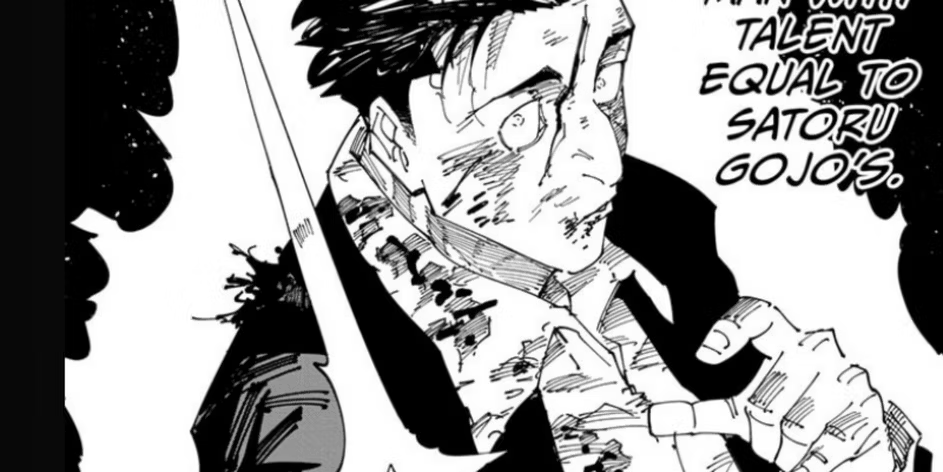
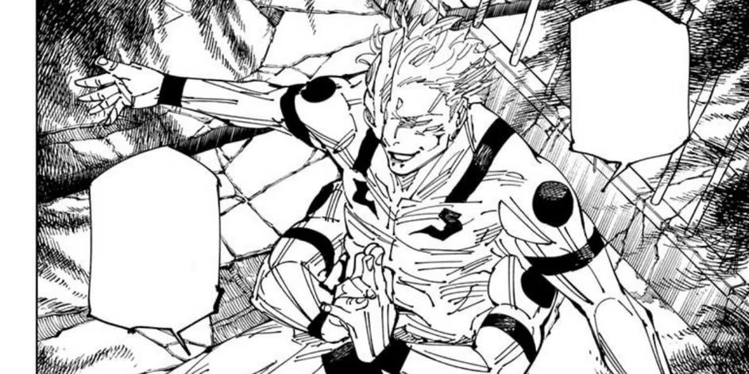
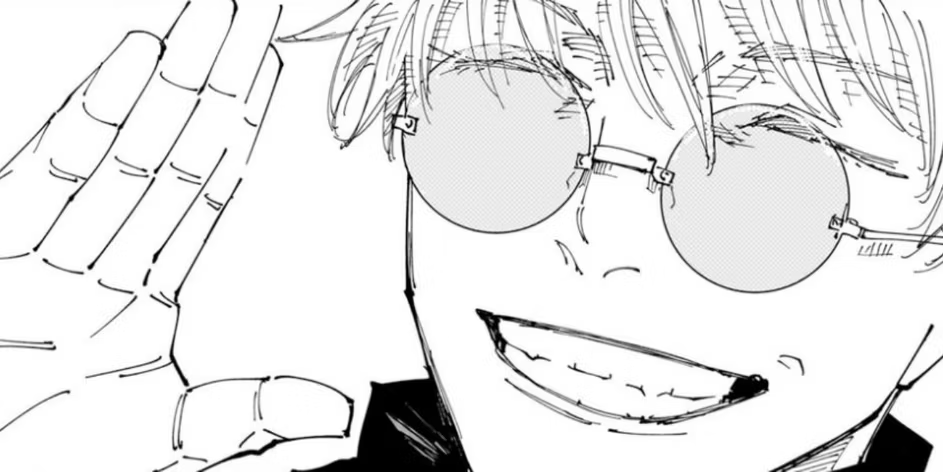

Jujutsu Kaisen Editor Hints At A Major Shocking Twist In The Manga

Jujutsu Kaisen returns this week with what is likely going to be yet another incredible chapter and fans are incredibly excited
to see the story continue in the Culling Game arc. This arc of the story has been nothing short of extraordinary for the fans to
witness and it goes without saying that everything that Gege illustrated over the course of the last few months has been
nerve-wracking for the fans.
While the story continues at a blistering speed towards the end of the Culling Game arc, fans also know that JJK is not too far
from its ending at the moment. In fact, the author of the story himself commented on the conclusion of the series, and now, the
editor of JJK has also made some comments pertaining to the end of the story.
Jujutsu Kaisen's Current Arc

Currently, JJK is in the Culling Game arc, and this arc is by far the longest in the story that fans have witnessed. It has hit
some of the most incredible highs and lows over the course of the last few years. Either way, the Culling Game arc of JJK has been
nothing short of extraordinary and one that has kept fans on the edge of their seats. Currently, the Culling Game arc is in its
climax, having recently tackled some of the biggest fights in the story. Over the course of the last few months, fans have seen
major fights, such as Gojo versus Sukuna, play out. This fight lasted for months and was certainly one of the very best in the
story, if not the best. After an incredibly amazing fight that kept the fans on the edge of their seats, Sukuna was the one who
came out on top and Gojo ended up losing his life.
From there onwards, fans were treated to a rapid fire of many amazing fights in quick succession, such as the battle between Kashimo
and Sukuna, and of course, Kenjaku versus Takaba. These fights ultimately shaped the climax of the Culling Game arc, with the return
of Sukuna to his true form, and of course, the apparent death of Kenjaku as well. Right now, the story is focused on Sukuna and he is
up against the remaining sorcerers, which includes the likes of Yuji, Hiromi Higuruma, Ino, and Kusakabe. It is quite clear for the
fans to see that the Culling Game arc of JJK is in its very climax, and that the story will likely not continue beyond 2024. This is
something that the author has also commented upon in many instances in the past as well.
Gege's Jujutsu Kaisen's Ending Plan

The ending of Jujutsu Kaisen's Culling Game arc is approaching rapidly and while it is not clear whether the story will continue
beyond that or if it is going to be the final arc, what fans know for sure is that the end is close. Previously, Gege commented on
the fact that the story will wrap up in 2024. At the same time, more recently, Gege's editor, Junya Fukuda, recently had an interview,
in which he revealed some of the most interesting details. According to him, the author of the series has already decided on the
ending of JJK. This means that he already has the final few chapters planned out and knows what plot point he wants to conclude the
story with.
However, that doesn't necessarily mean that whatever is in the middle has been planned out already. The author might take twists and
turns here and there and, potentially, alter the course of the character arcs of some interesting individuals. As long as he reaches
the same conclusion that he has planned out, the author is free to change the story however he likes.
Unfortunately, fans do not know what Gege has in mind at the moment. However, there are many interesting possibilities for the end of
JJK. It must be remembered that when JJK was about to get axed long ago, the author decided to end the story with Yuji's death and a
quick conclusion of the remaining character arcs in the following chapter. This means that Yuji's death is a plot point that could very
well end up happening at the end of the series as well. However, that was long ago and, since then, the author most likely has changed
how he handles his many characters.
The Last Year Of JJK

As fans know already, JJK is most likely going to end in 2024, which means there aren't all that many chapters of the manga left now.
At best, the story will likely have somewhere between 20 to 30 chapters left. The author previously wanted to conclude JJK in 2023.
However, that did not come to pass. At Jump Festa 2024, the author commented on the fact that it is going to be the last Jump Festa
stage for the series. This once again confirms that he does not expect the series to continue all the way up to December 2024.
As a result, fans already know that the manga is wrapping up and the Culling Game arc is likely to be the last one in the story.
What direction the story takes is unknown at the moment, however, the fans can only hope that the author delivers with whatever
plotlines he has in his mind at the moment.
Jujutsu Kaisen is available to read via Viz Media. The series can be read by the fans officially and for free on the Shonen Jump and
the Manga Plus app. The release date for the next chapter of JJK, Jujutsu Kaisen chapter 248, is set to be January 21, 2024.
What are your thoughts about this information?
Also, if you would like to be among the first one in receiving the latest news about the anime world, don't hesitate to subscribe to our newsletter
by clicking HERE.